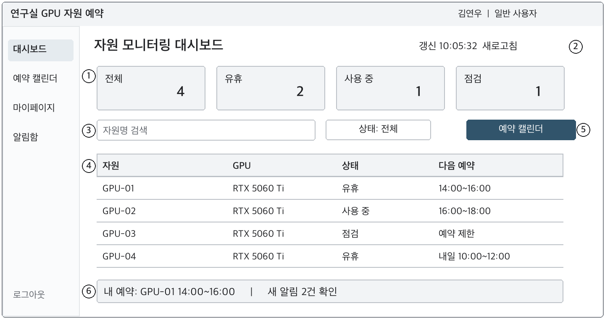

일반 사용자
내 실험에 필요한 시간을 예약합니다.
- 가입과 인증연구실 초대 코드와 이메일로 소속을 확인합니다.
- 자원 확인실제 상태·갱신 시각·예정된 예약을 확인합니다.
- 예약과 변경빈 시간을 선택하고 수정·취소·조기 종료합니다.
- 알림과 이력관련 알림과 본인의 예약 시간을 확인합니다.
누가 사용하고 있는지 확인하고, 필요한 시간을 예약합니다.
연구실이 보유한 GPU 서버와 노드를 함께 사용하는 웹 시스템입니다.
목표 구성 · 실제 배포 상태를 나타내지 않습니다.
설계와 구현 상태를 구분합니다. 현재 서비스는 초기 프로젝트 구성 단계이며, AWS 배포·HA·처리 성능은 검증 예정입니다.
기준 2026.11.02연구실 구성원과 관리자가 같은 자원 정보를 각자의 권한으로 사용합니다.
GPU 사용 상태와 예약 시간표를 나누어 표시합니다. 수신이 끊기면 마지막 갱신 시각을 유지합니다.
저장 직전에 중복·권한·정책을 다시 검사하고, 다중 인스턴스의 동시 요청도 검증합니다.
조회와 변경 모두 소속 연구실을 기준으로 제한합니다. 관리자는 일반 사용자 기능도 이용합니다.
UI 설계서의 원본 와이어프레임입니다. 화면의 데이터와 수치는 설명용 예시입니다.

소속 연구실 자원의 상태와 마지막 갱신 시각을 확인하고 예약 화면으로 이동합니다.
M01·M02는 U01·U04의 모바일 표현입니다. 별개의 예약 로직을 만드는 대신 같은 기능과 정책을 반응형 화면에 적용합니다.
Front → Gateway → API 흐름을 바탕으로 한 목표 구성입니다. 연결 방식과 서비스 발견 전략은 상세 설계에서 확정합니다.
인스턴스 수·크기·스케일링 목표값·내부 로드밸런싱 방식은 미정입니다. 실제 AWS 배포를 나타내지 않습니다.
실제 상태 수집 → API 반영 → 화면 갱신
ALB와 ACM을 도입하면 외부 TLS 연결은 ALB에서 종료합니다. 내부 HTTP·HTTPS 적용과 신뢰할 프록시 범위는 네트워크 경계에 맞춰 정합니다.
Eureka는 서비스 주소를 등록·조회합니다. 업무 요청이 통과하는 프록시는 아닙니다. 다중화와 내부 로드밸런서의 역할 분담을 확정합니다.
웹 서비스 인스턴스를 늘리는 것과 연구실 GPU 장비를 늘리는 것은 별개의 용량 계획입니다. 예약 대상 GPU를 웹 ASG와 구분합니다.
AWS Infrastructure Composer로 설계를 시각화하고 CloudFormation 템플릿을 Git으로 관리할 계획입니다.
CloudFormation 콘솔 또는 VS Code 연동에서 네트워크·의존 관계를 정리합니다.
YAML/JSON과 환경별 파라미터를 버전 관리합니다. 스택 분리 단위를 확정합니다.
변경 내용을 검토하고 재현 가능한 배포·롤백 절차를 정리합니다.
계획한 구조와 실제 배포 결과를 비교하고 측정 기록을 남깁니다.
# 목표 디렉터리 구조 · 아직 미작성
infra/
├── network.yaml # VPC · subnets · SG
├── ingress.yaml # ALB · target groups
├── compute.yaml # launch template · ASG
├── data.yaml # data layer
└── parameters/
├── development.json
└── production.json템플릿 저장소·실제 파일 구성은 설계 과정에서 확정합니다. 이 구조는 배포 가능한 템플릿이 아닙니다.
| 구성 | 설계 방향 | 확인할 내용 |
|---|---|---|
| 네트워크 | 두 개 이상 가용 영역, 공용 진입점·사설 애플리케이션 계층 | 서브넷·라우팅·통신 허용 범위 |
| ALB · ACM | HTTPS 진입과 건강한 대상에 요청 분산 | 리스너·인증서·readiness·연결 종료 |
| EC2 Auto Scaling | 계층별 수평 확장과 인스턴스 교체 | CPU·요청량 등 지표, 목표값·warmup |
| 데이터 계층 | DB 전환·복구와 예약 정합성 유지 | RDS Multi-AZ 등 대안, 연결 재수립·백업 |
| 공유 상태·알림 | 인스턴스 교체와 다중 실행에 대응 | 세션 저장, WebSocket 재연결, 중복 이벤트·배치 |
| 서비스 발견 | ASG 증감과 디스커버리 장애에 대응 | Eureka peer 구성·복수 주소·내부 LB 역할 |
| 관측과 운영 | 장애 징후와 배포 영향을 확인 | 로그·메트릭·알람, 배포·롤백 절차 |
처리량과 가용성은 아직 측정하지 않았습니다. 부하 시나리오와 합격 기준을 정한 뒤 결과를 공개합니다.
화면 → JavaScript 동작 → 실제 API 연동 순서입니다. 모든 마감은 한국 표준시(KST) 기준입니다.
공통 레이아웃, 인증·예약·관리 화면과 모바일 표현을 구현합니다.
현재 제출 단계폼·필터·캘린더·팝업을 구현하고 목업 데이터와 API 형식을 검증합니다.
예정인증·예약·실시간 처리와 데이터 저장을 연결하고 통합 검증합니다.
예정프론트엔드·JS·백엔드와 병행 인프라 작업을 구분합니다. 세부 목표일은 계획이며, 일정과 진행 상태는 GitHub Projects에서 관리합니다.
| 작업 | 관련 화면 | 완료 기준 |
|---|---|---|
| 회원·인증 | C01–C03, A01 | 초대 코드·메일 인증·역할별 접근과 실패 흐름 검증 |
| 모니터링 | U01–U02, O01–O02 | 실제 상태 수신·갱신 시각·연결 중단 표현 검증 |
| 예약 | U03–U06 | 등록·변경·취소·조기 종료와 동시 예약 충돌 검증 |
| 알림·관리·통계 | U07–U08, O01–O02, A01–A03 | 권한·읽음·정책 적용·예약 시간 집계 검증 |
| 반응형·접근성 | M01–M02 및 공통 | 좁은 화면·키보드·로딩·빈 결과·오류 흐름 검증 |
| IaC·HA | 공통 인프라 | 템플릿 재현성과 확장·축소·장애 복구 결과 기록 |
저장소별 README에서 현재 설정과 개발 범위를 확인할 수 있습니다.
Thymeleaf · HTML · CSS · JavaScript
서비스 라우팅 · 공통 요청 처리
인증 · 자원 · 예약 · 알림 · 관리 · 통계
데이터 모델 · 스키마 · DB 운영
서비스 등록 · 주소 조회 · 디스커버리
2026-11-02 기준 Front·API·Gateway는 Java toolchain 25와 Gradle Wrapper 9.8.2를 선언합니다. Spring Boot는 Front 4.1.2, API·Gateway 4.0.0입니다. 버전 호환성과 실행은 별도 검증 대상입니다.
Gateway는 WebFlux·WebMVC starter가 함께 선언되어 있어 실행 방식을 선택할 예정입니다. 제안서의 예상 DB는 MySQL이며 API 초기 설정은 MariaDB JDBC 드라이버를 사용합니다. 최종 DB 엔진과 Cassandra·Redis·RabbitMQ 등의 사용 여부는 기능·운영 요구에 따라 정합니다.
소개 페이지는 정적 문서 사이트입니다. 실제 예약·모니터링 서비스는 별도 배포 대상입니다.